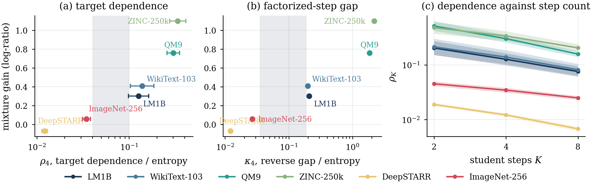
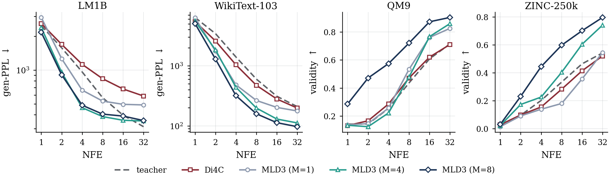
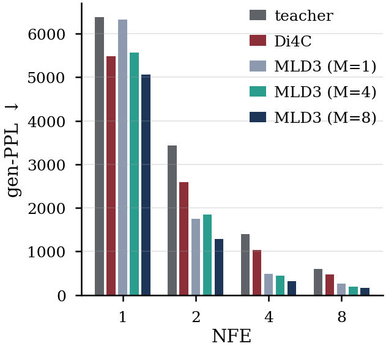
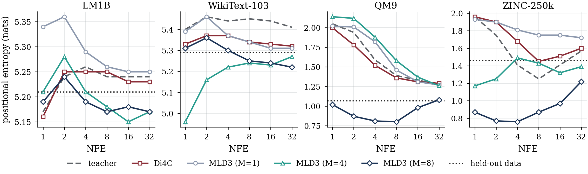
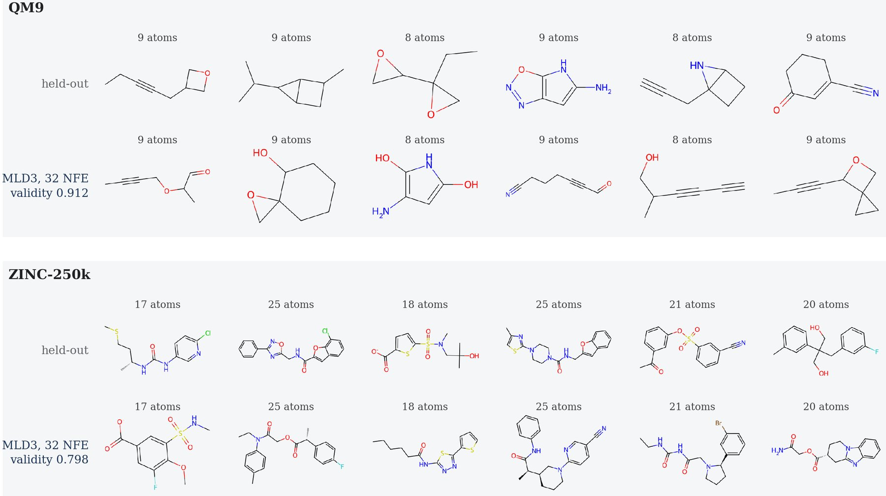
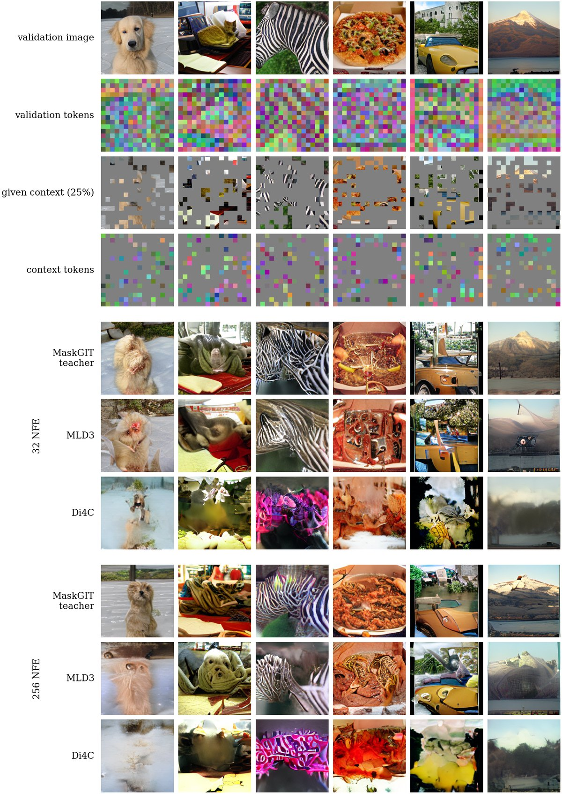

TL;DRA few-step student of a discrete diffusion teacher fills many positions in one step and draws them independently, so tokens that have to agree often do not. MLD3 replaces the single product by a small mixture of products chosen by a learned router. The likelihood of a sampled teacher transition is then available in closed form, so the student learns correlated updates directly, and one component recovers the standard masked diffusion student. Few-step quality improves by roughly 2 times across text, molecules, regulatory DNA and images.
Abstract
Discrete diffusion and flow models can generate high-quality sequences, but they usually require many denoising steps. Distilling them into few-step models is challenging because a single student step predicts many positions independently, which can lose important dependencies between tokens. We show that matching each position separately is not enough to reproduce the teacher's joint transition. Prior work addresses this issue with a shared continuous latent variable, but its training requires an approximation that can fail to make effective use of the latent. We propose Mixture-of-Latents for Discrete Diffusion Distillation (MLD3), which instead uses a small set of components selected by a parameterized router. This makes the likelihood of each sampled teacher transition exactly computable and allows the student to learn correlated updates directly. We also propose a novel sampling approach that exploits the mixture of components at almost no additional cost to that of a factorized step. Notably, MLD3 naturally reduces to a standard masked diffusion student with one component and adds minimal additional parameters as new components are added. Across text, molecules, regulatory DNA, and image generation, MLD3 consistently improves few-step generation quality by roughly $2\times$ over baselines, with the largest gains on tasks with stronger dependencies across positions.
One step, many positions, drawn independently
A masked diffusion model reveals the positions of a sequence over many denoising steps. Given the state $\boldsymbol{x}_t$, a step samples every masked position from its own categorical distribution,
This factorization is exact when a step reveals one position at a time. A few-step sampler has to reveal several positions in each step, and positions revealed together are rarely independent. A student can match every per-position marginal of the teacher and still miss its joint structure, with an irreducible error given by the total correlation of the teacher's transition,
In the toy picture above, the two positions are completed as The…brown, A…big or My…old. A product of the two marginals keeps all nine combinations, and a quarter of its samples land between the modes on pairs that no sentence of the data uses.
A small mixture, chosen by a router
MLD3 replaces the single product by a mixture of $M$ products. A router reads the current state and assigns the weight $w^{\theta}_k$ to component $k$, and each component keeps its own factorized step,
To sample one step we draw a single index $k\sim w^{\theta}(\boldsymbol{x}_t,t)$ that all positions share, and then fill every masked position from component $k$. That one sequence-level draw is what couples the positions revealed together. Because the mixture is finite, the likelihood of a teacher transition is a closed-form sum over $M$ terms rather than an integral, so the student trains on it directly,
Exact, not a surrogate
A finite latent turns the step likelihood into a closed-form sum, so the divergence to the teacher is differentiable without sampling the latent and the router receives a gradient.
One component is the baseline
At $M=1$ the objective reduces to the usual masked diffusion student, so the mixture is a strict generalization and every comparison has a matched control.
Cheap to widen
Only the last $L_{\mathrm{lat}}$ blocks run once per component, on one shared set of weights. Adding a component costs an embedding vector and one scalar router output.
Architecture and the forward pass
A single transformer trunk returns the router weights and the distributions of all components in one pass. The first $D-L_{\mathrm{lat}}=8$ blocks run once per state and give a shared representation, from which a two-layer head on the mean-pooled hidden states produces the weights. The remaining $L_{\mathrm{lat}}=4$ blocks hold one set of weights and run once per evaluated component, where the component enters only through the learned embedding $E_k$ added to the conditioning vector.
Sampling with the mixture
Our default sampler reveals a fixed number of positions per step in a spread order and evaluates only the two components that the router ranks highest, scoring their proposals under the mixture and keeping the best one. Cost is counted in block passes rather than in network calls, since a mixture step reuses the shared trunk. With $D=12$ blocks and $L_{\mathrm{lat}}=4$, a step costs 12 block passes at $M=1$ and 16 with two components evaluated, so a mixture step is about a third more expensive than a factorized one and far cheaper than evaluating all $M$ components.
Why a continuous latent collapses
A shared continuous latent $\lambda$ gives the same coupling in principle, but its step likelihood integrates over $\lambda$ and is intractable. Prior work therefore trains on a Jensen bound estimated with a single Monte Carlo draw of the latent,
The bound moves the mixture outside the divergence, which leaves an objective that separates across latents. We prove that this single-sample loss sends no gradient to the mixing weights and that its optimum places every component at the same factorized solution. The latent is therefore not merely underused but unreachable, a failure we call surrogate collapse, and it is what the top row of the toy picture shows. Replacing the continuous latent by a finite index removes the integral, so the mixture stays inside the divergence and the router is trained rather than bypassed.

Few-step generation
We distill MDLM teachers on WikiText-103 and LM1B, PairFlow-recipe teachers on QM9 and ZINC-250k, a masked model on DeepSTARR regulatory DNA, and a MaskGIT teacher on ImageNet-256, and we compare against Di4C under its own sampler and against the $M=1$ control trained the same way. On WikiText-103 the $M=8$ student lowers generative perplexity from 265 to 159 at 8 NFEs, a 40 percent reduction against the control, and improves on the teacher at every budget. On LM1B it lowers it from 529 to 405 at the same budget.

| gen-PPL, WikiText-103 | 4 NFEs | 8 NFEs | 32 NFEs |
|---|---|---|---|
| MDLM teacher | 1403 | 600 | 209 |
| Di4C | 1039 | 473 | 198 |
| MLD3 ($M=1$, control) | 481 | 265 | 177 |
| MLD3 ($M=4$) | 439 | 198 | 112 |
| MLD3 ($M=8$) | 319 | 159 | 97 |
The student rows use our sampler, and the teacher and Di4C rows use their own. The full grid, LM1B, and the decoding ablations are in the paper.

The ordering follows the dependence in the task rather than the modality. Molecules gain most, where validity at 4 NFEs rises from 0.139 to 0.444 on ZINC-250k and from 0.257 to 0.574 on QM9 against the matched control. On DeepSTARR, where the steps carry almost no dependence between positions, the mixture improves the Fréchet biological distance by up to 21 percent, a smaller gain that the teacher-side test predicts in advance. On ImageNet-256 the $M=8$ student improves FID over Di4C at every budget under the same sampler, mainly by recovering recall.

Samples


BibTeX
@article{ahmed2026mld3,
title = {Mixture-of-Latents for Few-Step Discrete Diffusion Distillation},
author = {Ahmed, Mansoor and Tang, Sophia and Venkateswara, Hemanth and Patterson, Murray},
year = {2026},
note = {Preprint}
}